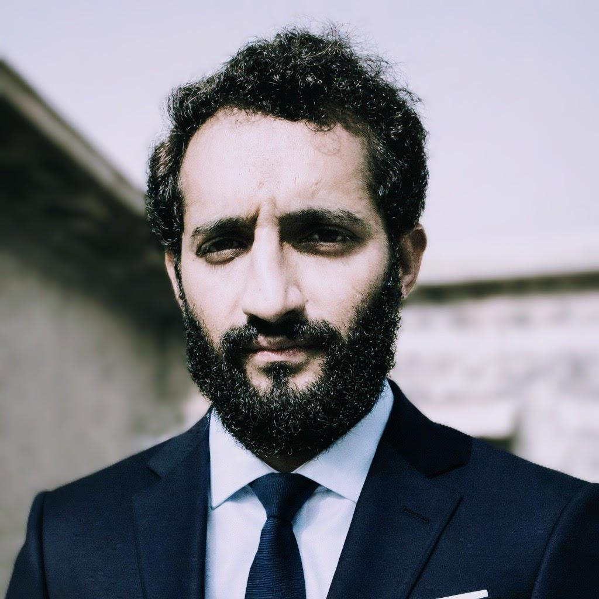

Professional Background & Credentials

Advocate Muhammad Usman is a practicing civil lawyer with specialized expertise in property litigation. His practice emphasizes procedural accuracy, comprehensive statutory compliance, and practical judicial outcomes that effectively serve his clients' interests.
With a strong foundation in civil law, he regularly represents clients in complex property disputes involving questions of ownership, possession disputes, contractual enforcement, and succession matters before civil courts and appellate forums.
Advocate Usman's practice is guided by three core principles: clarity in establishing legal rights, ethical and professional advocacy, and strategic litigation management. Each matter receives meticulous attention to documentary evidence, statutory limitation periods, and relevant judicial precedents to achieve the best possible outcomes.
He believes that effective legal representation requires not only technical knowledge of the law but also a deep understanding of his clients' concerns and objectives. This client-focused approach, combined with rigorous legal analysis, forms the foundation of his practice.
His specialized areas include property title disputes, partition proceedings, possession recovery matters, enforcement of specific performance contracts, declaratory relief actions, and injunctive relief proceedings. He works extensively with property disputes that involve interpretation of deeds, contracts, succession rights, and statutory obligations.